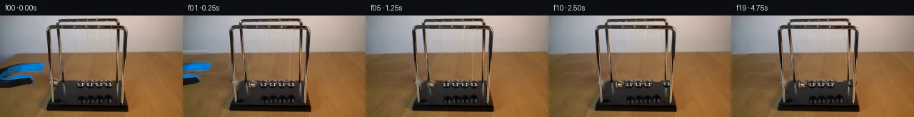

![首帧]()

Round 00
2026-11-05T17:28:36.585579+00:00像素候选变化代码 +216/−0inspection 更新
pixels 7d8e5a9d71e8e5f4 · code 2c0943fe23900a05
查看本轮 generate.py 真实 diff
--- previous/generate.py
+++ current/generate.py
@@ -0,0 +1,216 @@
+"""PixelWorld continuation: source pixels, local repair, pendulum mechanics.
+No network, image-view tools, learned models, or external renderers.
+"""
+from pathlib import Path
+import json
+import numpy as np
+from PIL import Image, ImageDraw
+import cv2
+from scipy.ndimage import binary_dilation, gaussian_filter
+from artifact_io import save
+
+ROOT = Path(__file__).resolve().parent
+SOURCE = np.array(Image.open(ROOT / 'first_frame.png').convert('RGB'))
+H,W = SOURCE.shape[:2]
+Y,X = np.mgrid[:H,:W].astype(float)
+S = SOURCE.astype(float)
+
+def segment_distance(ax,ay,bx,by):
+ vx,vy=bx-ax,by-ay
+ p=np.clip(((X-ax)*vx+(Y-ay)*vy)/(vx*vx+vy*vy),0,1)
+ return np.hypot(X-ax-p*vx,Y-ay-p*vy)
+
+# The tool is isolated by local RGB conditions, then expanded to include
+# its optically mixed edge pixels. All masks are derived in this script.
+blue=(S[:,:,2]>S[:,:,0]+9)&(S[:,:,2]>S[:,:,1]+8)
+dark=(S.mean(2)<65)
+roi=(X<64)&(Y>=51)&(Y<=105)
+tool=roi&(blue | (dark&(Y>66)&(X<49)) |
+ ((X<23)&(Y>=52)&(Y<=66)&(S[:,:,2]>=S[:,:,0]-3)))
+tool=binary_dilation(tool,iterations=1)&(X<65)&(Y>=50)&(Y<=106)
+# Keep the physically separated timber between the two blue fingers.
+
+# Fit only visible timber on the left. This provides the large area exposed
+# by withdrawal; fine texture comes from other visible timber in the source.
+xn=(X-32)/32;yn=(Y-95)/45
+features=np.stack([np.ones_like(X),xn,yn,xn*xn,xn*yn,yn*yn,yn**3],-1)
+valid=(X<66)&(Y>=57)&(~binary_dilation(tool,iterations=2))
+valid &= (S[:,:,0]>S[:,:,1]+12)&(S[:,:,1]>S[:,:,2]+10)
+a=features[valid];b=S[valid]
+coef=np.linalg.lstsq(a,b,rcond=None)[0]
+for _ in range(4):
+ res=np.linalg.norm(b-a@coef,axis=1)
+ keep=res<np.percentile(res,86)
+ coef=np.linalg.lstsq(a[keep],b[keep],rcond=None)[0]
+table=features@coef
+smooth=gaussian_filter(S,sigma=(1.1,1.1,0))
+residual=S-smooth
+sy=108+(Y.astype(int)%34)
+sx=np.minimum(X.astype(int),64)
+table += residual[sy,sx]*0.7
+# Continue the measured wall gradient over the top edge of the withdrawn tool.
+wallvalid=(X<62)&(Y>=30)&(Y<49)
+wfeat=np.stack([np.ones_like(X),X/60,Y/50,(X/60)**2,(Y/50)**2],-1)
+wallcoef=np.linalg.lstsq(wfeat[wallvalid],S[wallvalid],rcond=None)[0]
+wall=wfeat@wallcoef
+boundary=54.5-.038*X
+blend=np.clip((Y-boundary+1.0)/2.0,0,1)
+exposed=np.clip(wall*(1-blend[:,:,None])+table*blend[:,:,None],0,255)
+clean=S.copy();clean[tool]=exposed[tool]
+
+# Two photographed end-ball textures. Middle balls and all supports remain
+# original pixels. The initial displaced sphere returns to x=100.
+left_initial=(78.,94.5);right_initial=(152.,97.5)
+radius=6.35
+left_mask=np.hypot((X-left_initial[0]),(Y-left_initial[1]))<7.0
+right_mask=np.hypot(X-right_initial[0],Y-right_initial[1])<7.15
+# Locally erase the two moving suspensions, protecting the rigid frame rods.
+left_lines=(segment_distance(86,18,78,89)<.82)
+right_lines=(segment_distance(156,18,153,91)<.9)|(segment_distance(150,9,148,91)<.85)
+rod=((X>=65)&(X<=73)&(Y>=19)&(Y<=122)) | ((X>=80)&(X<=90)&(Y>=19)&(Y<=119)) | ((X>=162)&(X<=178)&(Y>=19)&(Y<=125))
+line_mask=(left_lines|right_lines)&(Y>=20)&(Y<=91)&(~rod)
+repair=left_mask|right_mask|line_mask
+clean=cv2.inpaint(np.rint(clean).astype(np.uint8),repair.astype(np.uint8)*255,3,cv2.INPAINT_TELEA).astype(float)
+
+# Right sphere lies above the dark plinth. Restore the locally measured
+# plinth surface under its lower semicircle, to prevent chrome residue.
+for yy in range(94,105):
+ # Smooth adjacent surface samples, avoiding other spheres.
+ c0=S[yy,159:162].mean(0)
+ c1=S[yy,98:105].mean(0)
+ col=.75*c0+.25*c1
+ mask=right_mask[yy]&(np.arange(W)>=146)
+ # At rows 94-103 the sphere sits in front of an approximately flat plinth.
+ clean[yy,mask]=col
+
+# Cleaned initial ball patch crosses the table/plinth boundary.
+# Telea interpolation retains the nearby real rail reflections and table grain.
… diff truncated; 129 more lines …